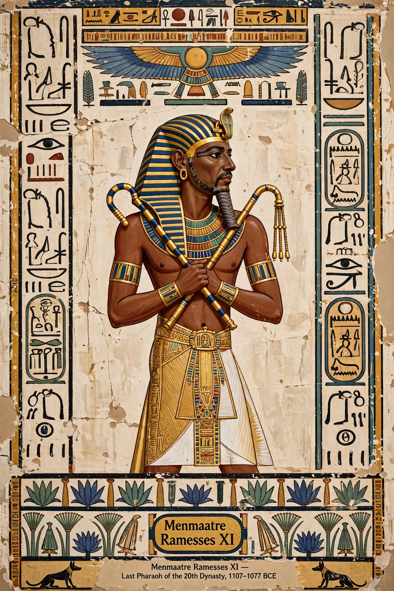

Ramesses XI (reigned 1107–1078/77 BC) was the tenth and last pharaoh of the Twentieth Dynasty of Egypt and of the New Kingdom. His long reign saw central authority collapse amid tomb robbery trials, civil conflict, famine and Libyan incursions, ending with effective partition of Egypt.

Early in his reign the High Priest of Amun Amenhotep was suppressed by the Viceroy of Kush Panehsy, whose ensuing conflict devastated Thebes. From about year 19, the era called the Whm Mswt ("Renaissance") was proclaimed under the general and High Priest Herihor and later Piankh, who ruled Upper Egypt in near-independence while Ramesses reigned from the Delta.
After his death, Smendes founded the 21st Dynasty in the north while priests ruled the south, beginning the Third Intermediate Period. His tomb KV4 in the Valley of the Kings was left unfinished and later used as a workshop.